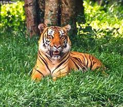

Tigre de Bengala

Hábitat y estilo de vida:
El tigre de Bengala (Panthera tigris tigris) es una de las subespecies de tigre más emblemáticas y reconocidas en el mundo. Habita en bosques tropicales, manglares y praderas de la India, Bangladesh, Nepal y Bután. Es un depredador solitario que se desplaza por grandes territorios en busca de presas. Su dieta consiste principalmente en ciervos, jabalíes y otros mamíferos de tamaño medio. A diferencia de otros felinos, el tigre disfruta del agua y es un excelente nadador, lo que le permite expandir su territorio y cazar con mayor eficiencia.
El tigre de Bengala es un animal territorial y marca su espacio con orina y arañazos en los árboles. Los machos tienen territorios más grandes que los de las hembras y solo se encuentran con ellas durante la época de apareamiento. A pesar de su fuerza y agilidad, enfrenta grandes amenazas como la caza furtiva y la destrucción de su hábitat, lo que ha reducido drásticamente su población en los últimos años.
Características
-
Reproducción:
La gestación dura aproximadamente 100 días y las hembras dan a luz entre 2 y 4 crías, que permanecen con su madre por dos años.
-
Fuerza y velocidad:
Pueden alcanzar velocidades de hasta 60 km/h en distancias cortas y tienen una mordida extremadamente poderosa.
-
Patrón de rayas único:
Cada tigre tiene un patrón de rayas diferente, lo que permite su identificación individual.
-
Nadador experto:
A diferencia de la mayoría de los felinos, el tigre disfruta del agua y puede nadar largas distancias.
-
Estado de conservación:
Se encuentra en peligro de extinción debido a la caza furtiva y la pérdida de hábitat.
Regresar a la página principal